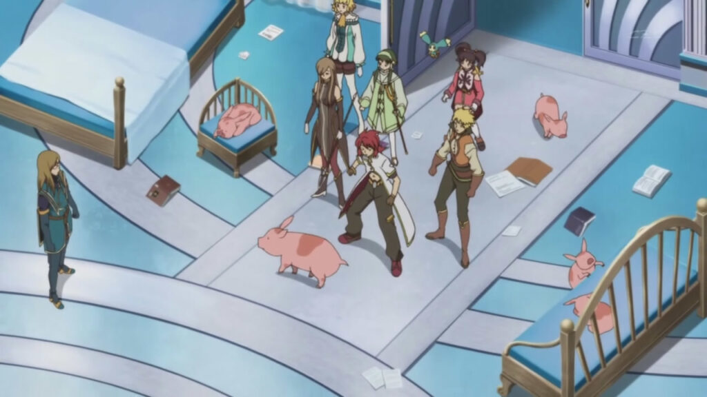
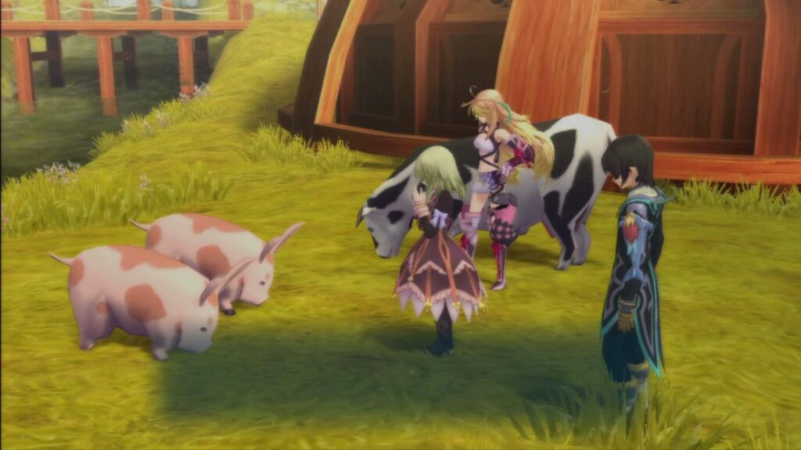
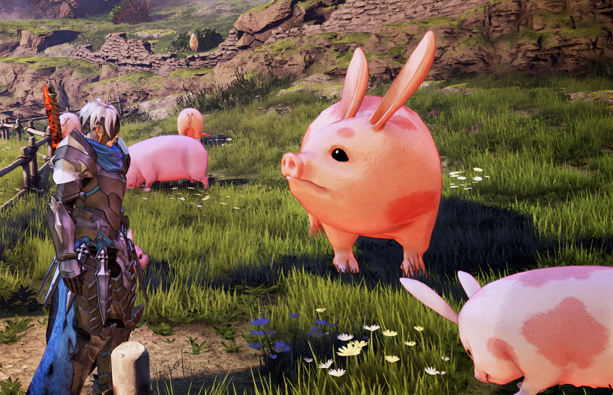
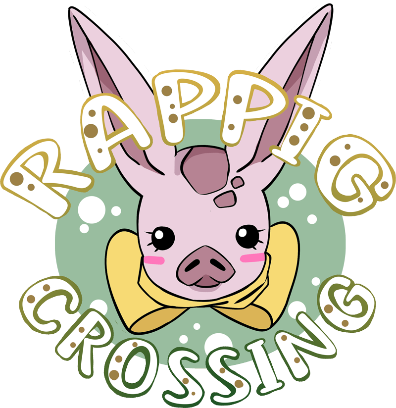

What are Rappigs?
Rappigs (also known as "buusagi" or ブウサギ), are an animal species in the Tales Of video game universe.
They are "rabbit-pigs", and are rabbits who look like pigs. They are spotted pink, have long ears, and a nub tail.
Rappigs are a farm animal, but can also be kept as pets.
Not to be mistaken with piggits! Piggits are pigs with rabbit ears and a curly tail, and they are apparently toxic to eat.
Tales of the Abyss
The first appearance of rappigs were in Tales of the Abyss where they also received the most focus of any Tales game. Emperor Peony has a group of five (six at the end of the game) pet rappigs named after his friends: Aslan, Gelda, Jade, Nephry, and Saphir.
They are also shown in the anime adaptation.
Tales of Xillia
Rappigs were also the focus of a sidequest in Tales of Xillia… though it isn’t as friendly for the rappig!
A pair of rappigs are also able to spoken to in a sub-event dubbed “Rappig, Rappig”.
Tales of Berseria
In Tales of Berseria, you can get a rappig as your Geoboard.
Tales of Arise
You are able to raise rappigs on a farm for cooking ingredients in Tales of Arise. There is also one particularly giant rappig seen on a nearby farm.
There are a few other Tales games that have rappigs in them, but they don’t have any real focus and are just seen on farms.
Official Merchandise
Here is a sample of some of the rappig merchandise that has been released. Most of these can only be purchased second-hand nowadays. Full list of merch.
Rappig Crossing
Interested in hanging out with other rappig (and Tales Of) fans? Join us for Rappig Crossing, a Tales convention in Indiana!
